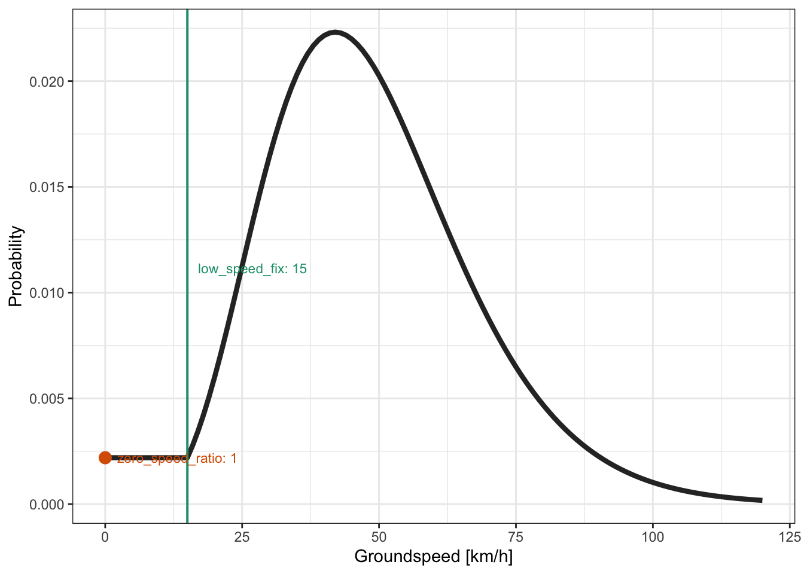
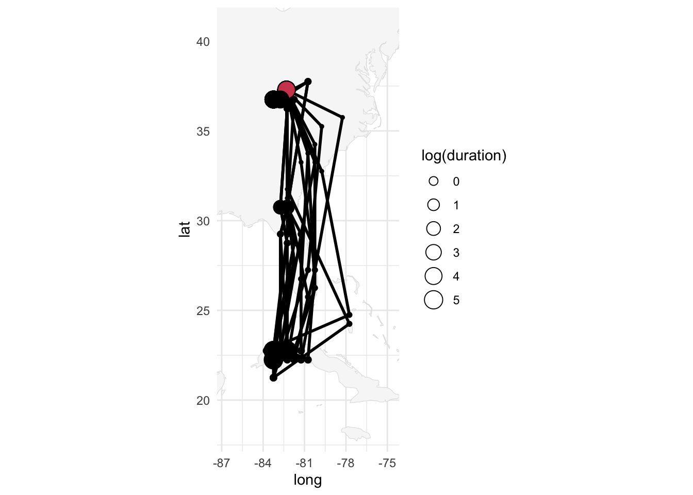

3 Trajectory
Code
tag <- tag_create(id = "CB619") |>
tag_label() |>
tag_set_map(
extent = c(-100, -68, 0, 40), # coordinates of the map to request (W, E, S, N)
scale = 2, # request on a 1/2=0.5° grid, coarse, but fast
known = data.frame(
stap_id = 1,
known_lat = 37.286812,
known_lon = -82.304972
)
) |>
geopressure_map(
max_sample = 100,
margin = 20,
thr_mask = 0.95,
sd = 0.5,
log_linear_pooling_weight = \(n) 4 * log(n) / n,
keep_mse = TRUE,
quiet = TRUE
)In this last chapter of the basic tutorial, we model the full trajectory of the Swainson’s Warbler by combining the observation model of pressure with a movement model of flight accounting for likely speed to constrain possible distances between stationary periods. To do so, we use a highly optimized Hidden Markov model presented in Nussbaumer et al. (2023).
This involves three main steps:
- Create the graph representing the possible trajectory of the bird.
- Set the movement model which defines the likelihood of each possible flight encoded in the graph.
- Compute three products of the model: (1) the most likely trajectory, (2) the probability maps at each stationary period (i.e., marginals), and (3) simulated paths sampled according to their likelihood.
3.1 Background on movement modeling
If you haven’t heard of Hidden Markov model, state-space models, or trellis graphs, I recommend that you start by reading the summary below, or - even better - read Patterson et al. (2008) and Nussbaumer et al. (2023) if you’re feeling brave!
Click here to read a short summary of movement model
Note
We start by making the fundamental assumption that the overall trajectory can be separated into discrete positions which, together, create a trajectory.
This discretization allows us to use a Hidden Markov model, which conveniently distinguishes the unknown positions of a bird \(X_t\) from some known observations \(Y_t\) which can be related to these positions (e.g., pressure or light measurement). Defining an HMM requires that we set:
- An observation model \(P(Y_t | X_t)\), which defines the likelihood of observing a measurement at a given position. This is exactly what our pressure likelihood map computed in the previous chapter does.
- A movement model \(P(X_t+1|X_t)\), defining the probability that a bird was able to fly a specific distance between two consecutive stationary periods.
- An initial state \(P(X_0)\), technically required but this does not constitute a strong constraint in our case.
Let’s say that our goal is to produce the probability map for each stationary period accounting for all pressure measurements while maintaining likely flights. This corresponds to the marginal probability map \(P(X_t=x_t|Y_0=y_0,...Y_t=y_t)\). If you are not familiar with the lower and capital case, \(X_t\) represents the random variable (i.e., the position of the bird at a stationary period \(t\)), while \(x_t\) is a specific value that \(X\) can take, in our case, the specific coordinates of pixels on the map.
Because the number of possible positions is limited (i.e., number of pixels on the map), we can solve the HMM exactly. This is in contrast to Markov Chain Monte Carlo (MCMC) algorithm, which does not assume any discretization of space but relies on an iterative approach to solve the model.
A graph is a convenient mathematical representation of a model which has states (nodes) and relations between these states (edges). Graphs are a general and fundamental mathematical tool, but here we use a specific graph structure corresponding to the HMM presented above: two states \(X\) and \(Y\) for each time step \(t\) (nodes), and an observation and movement model (relating \(X_t\) to \(X_t+1\) and \(Y_t\) to \(X_t\) respectively). All other relationships are assumed to be independent.
Typically in animal movement, the graph is only used to represent the random variable of the HMM, but in our case, we also use the concept of graph to store all discrete positions (i.e., pixels) of the bird at all timesteps, referred to as a trellis graphs.
You can think of the nodes as a full 3D grid of lat x lon x stationary period and the edges as all possible pairs of nodes between two consecutive stationary periods. As you can imagine, this results in a very high number of edges! The novelty of Nussbaumer et al. (2023) is to construct this graph using only the useful nodes and edges, thereby dramatically reducing the computational resources required.
3.2 Create the graph
We create the trellis graph with the function graph_create(), which performs the following steps:
- Keep only the nodes of all locations within a threshold percentile of the likelihood map
thr_likelihood. For instance, a value of0.90means that We only keep the pixels for which their likelihood sums represent 90% of the total probability space. - Keep only the nodes which are within reach of at least one node of the previous and one of the next stationary period. This is done by assuming a maximal possible groundspeed
thr_gs. This key step is efficiently computed with the image binary distance functionEBImage::distmap(). - Build the edges based on the filtered nodes and the groundspeed threshold
thr_gs. - Prune the graph based on the flow graph constraint, that is, that all nodes must be connected to the equipment node(s) and retrieval node(s), to avoid dead branches (where some nodes are connected in a single direction).
These steps are explained and illustrated in more detail in section 2.2 of Nussbaumer et al. (2023)
graph <- graph_create(
tag,
thr_likelihood = 0.90,
thr_gs = 100, # km/h
quiet = TRUE
)3.3 Set movement model
We then define the movement model by setting a parametric function converting groundspeed to probability.
In this basic tutorial, we use the gamma distribution to model the probability of groundspeed.
graph <- graph_set_movement(
graph,
method = "gamma",
shape = 7,
scale = 7,
low_speed_fix = 15
)Because birds may fly back and forth over small distances, we give all groundspeeds under 15km/h the same probability as for 15 km/h with the parameter low_speed_fix.
We can visualize the parametric function created with plot_graph_movement()
plot_graph_movement(graph)
3.4 Products
With the graph built, we can now generate the three main products of GeoPressureR, presented in more detail in section 2.3 of Nussbaumer et al. (2023).
3.4.1 Product 1: Most likely path
The graph can directly and efficiently compute the most likely path, that is, the set of positions at each stationary period which maximizes the joint probability of the trajectory. It finds the optimal compromise between the most likely position according to the pressure (and light) likelihood map and the realistic flight distance defined by the movement model.
path_most_likely <- graph_most_likely(graph, quiet = TRUE)In GeoPressureR, a path is a standard data.frame created and used in several other functions.
| stap_id | j | ind | lat | lon | start | end | include | nb_sample | known |
|---|---|---|---|---|---|---|---|---|---|
| 1 | 1 | 2806 | 37.28681 | -82.30497 | 2021-07-01 02:30:10 | 2021-09-24 00:15:10 | TRUE | 0 | TRUE |
| 2 | 1 | 2896 | 32.25000 | -81.75000 | 2021-09-24 11:15:10 | 2021-09-24 23:45:10 | TRUE | 13 | FALSE |
| 3 | 1 | 3067 | 26.75000 | -80.75000 | 2021-09-25 10:45:10 | 2021-09-25 23:45:10 | TRUE | 14 | FALSE |
plot_path(path_most_likely)See Map tiles to configure the basemap selector used by this interactive map.
3.4.2 Product 2: Marginal probability map
Estimating the uncertainty of the bird’s position for each stationary period is generally the most sought-after output of tracking studies. While the pressure likelihood map provides some information for each stationary period, we can now produce the probability map of positions accounting for all observations and transitions. In the HMM, these maps correspond to the marginal distribution of a Markov process.
marginal <- graph_marginal(graph, quiet = TRUE)You can visualize the marginal map along with the most likely path:
plot(marginal, path = path_most_likely)3.4.3 Product 3: Simulated paths
When you want to perform a post-hoc computation on the trajectory (e.g., mean flight distance), it is convenient to simulate multiple paths, compute the metric on each of them (e.g., flight distance) and compute the summary statistics afterwards (e.g., mean).
Note that we are using the forward filtering backward sampling algorithm, allowing to sample trajectories independently and without error.
path_simulation <- graph_simulation(
graph,
nj = 10, # Number of simulation
quiet = TRUE
)plot_path(path_simulation, plot_leaflet = FALSE)
3.5 Save
You might want to save some of the key objects such as tag or marginal in an R format. Following the default structure described in GeoPressureTemplate, you should save them in the ./data/interim folder.
param <- graph$param
save(
param,
tag,
# graph, # format(object.size(graph), units = "MB")
path_most_likely,
path_simulation,
marginal,
file = "./data/interim/CB619.RData"
)Note that you can retriev all the functions parameters used with tag$param and/or graph$param.
WarningWorkflow note
This manual save() step is only used here to learn the pipeline one step at a time.
For real analyses, especially when processing multiple tags, the recommended approach is to create the interim files with geopressuretemplate().
This workflow is described in detail in GeoPressureTemplate workflow.